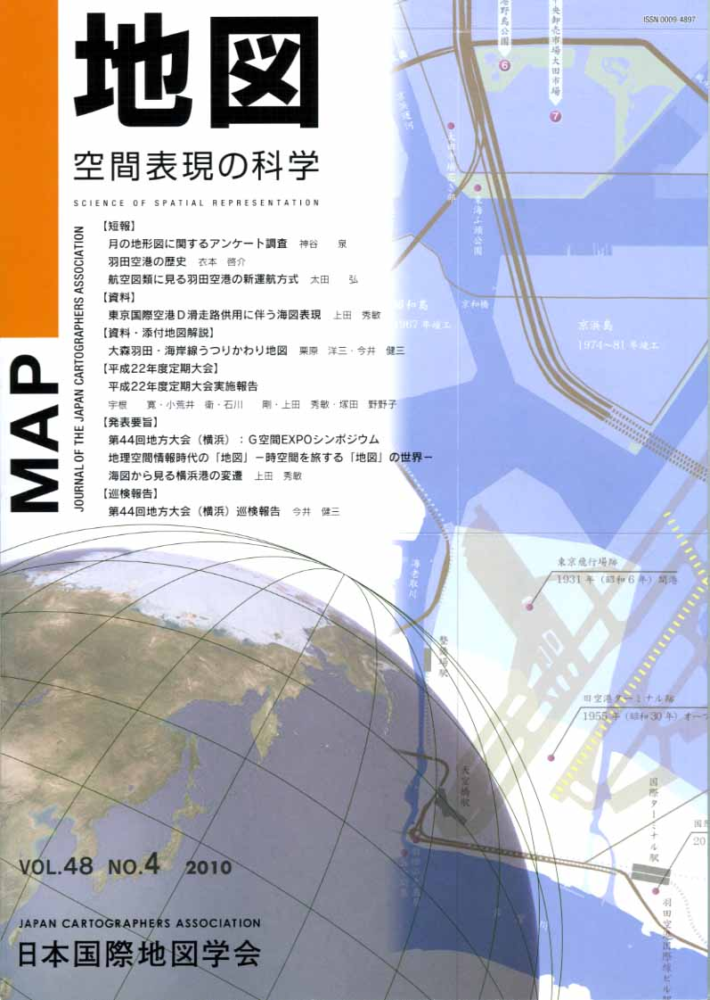
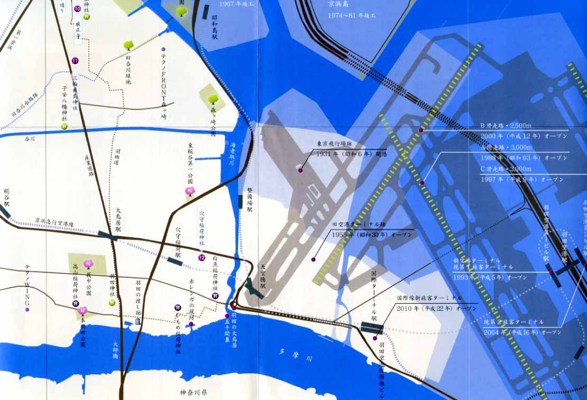

| 最 新 号 | バックナンバー | 添付地図目録 | 投 稿 規 程 |
Vol.48 No.4 （通巻１９２号） ２０１０年
| 【短報】 | 月の地形図に関するアンケート調査 | 神谷 泉 |
| キーワード：月、地形図、地図表現 | ||
| 羽田空港の歴史 | 衣本啓介 | |
| キーワード：羽田空港、首都圏空港、24時間国際拠点空港化、再拡張事業、歴史 | ||
| 航空図類に見る羽田空港の新運航方式 | 太田 弘 | |
| キーワード：ICAO、AIP、VAC、D-RWY、飛行方式、CVA | ||
| 【資料】 | 東京国際空港Ｄ滑走路供用に伴う海図表現 | 上田秀敏 |
| キーワード：東京国際空港、東京西航路、制限表面、船舶高基準面、海上空港 | ||
| 【資料・添付地図解説】 | 大森羽田・海岸線うつりかわり地図 | 栗原洋三・今井健三 |
| キーワード：観光地図、大森・羽田海岸、海苔養殖、羽田国際空港 | ||
| 【平成22年度定期大会】 | 平成22年度定期大会実施報告 | 宇根 寛・小荒井衛・石川 剛・上田 秀敏・塚田野野子 |
| 【発表要旨】 | 第44回地方大会（横浜）：Ｇ空間EXPOシンポジウム 地理空間情報時代の「地図」−時空間を旅する「地図」の世界− | |
| 海図から見る横浜港の変遷 | 上田秀敏 | |
| キーワード：日米修好通商条約、海図、横浜港 | ||
| 【巡検報告】 | 第44回地方大会（横浜）巡検報告 | 今井健三 |
| キーワード：横浜港、航海、海図、チャートワーク | ||
| 【会告】 | 第48巻３号に掲載された論説・添付地図解説及び添付地図の取り下げについて | 日本国際地図学会編集委員会 |
| 【特別会員のページ】 | リンテック株式会社 | |
| 【年間総目次】 | ||
| 【学会記事】 | ||
| 【添付地図】 | 大森羽田・海岸うつりかわり地図 | |
| 海上保安庁刊行航海用電子海図セル索引図（平成22年１月現在） | ||
| 海上保安庁刊行日本近海図索引図（平成22年２月現在） | ||
| 【参考資料】 | 羽田空港国際線総合サービスガイド | |
|
≪No.48 No.4 表紙≫ |
|
|  |
|
|
|
≪No.48 No.4 添付地図≫ |
| 
本図を許可なく複製・利用することを禁止します。
|